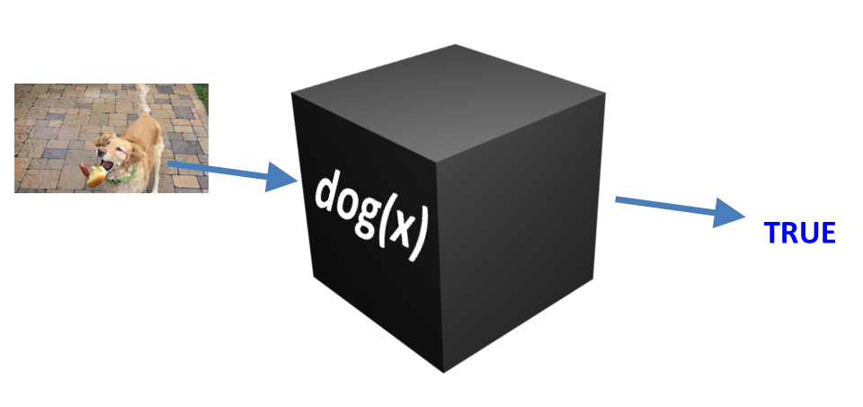
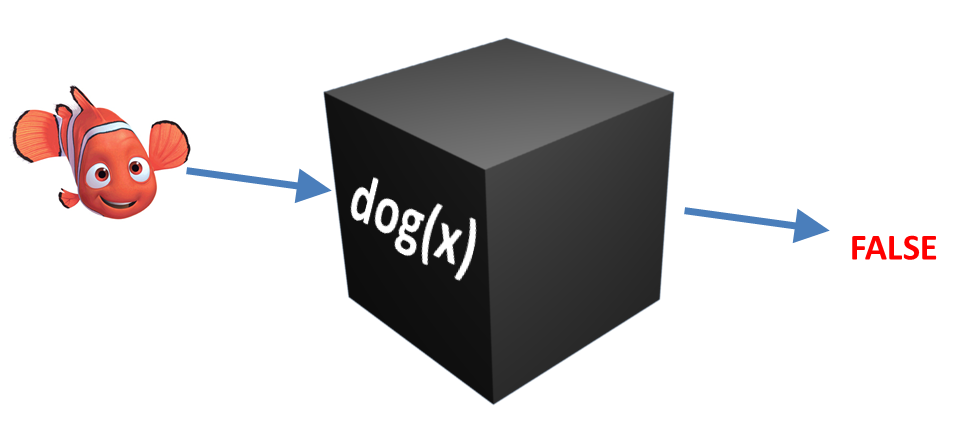

To really understand what pragmatics is all about and why we need a model of pragmatics at all,
we need to look at what ideas the theory of pragmatics emerged as a response to; we need to look at what
semanticists believed about language before the study of pragmatics emerged.
Understanding the details of semantic theory is not strictly necessary for this class (this is,
after all, a pragmatics class, not a semantics class), but at least understanding the general spirit
of the ideas—and, most importantly, the problems with them—will help you understand what
pragmatics is needed for. Pragmatics also uses a lot of semantics concepts, so some of these same ideas
will reappear throughout the class even though it's not really a semantics class.
Because this is a pretty tricky topic, we're going to have to divide it across two modules:
first we'll see what the main idea of semantics is, and then in the next module we'll see where it breaks down
and why we need pragmatics to fill the gap. Things will start to get a bit abstract and crazy here, so buckle up.
Meaning as reference?
Semantics is the study of meaning, and its job is to figure out how we understand the meanings of
expressions: how we understand the meanings of individual words, how we put those meanings together to make
more complicated propositions, etc. So one of the central questions of semantics is: what even is
meaning. What does it mean to "mean" something?
One of the early ideas (going back at least to the early 20th century) was that words refer to
things in the world. E.g., you understand the meaning of the word "cat" by picturing a particular cat
in your mind. In some way, the meaning of the word "cat" is a cat. In other words, the meaning
of a word (or multi-word expression) is the thing it points to in the real world.
It turns out, though, that there are tons of problems with this idea. Here are a few of them:
Some expressions don't refer to anything, but they still have a meaning. The famous example
of this is the expression "The current king of France". At the moment that I am writing
this (2 October 2021), France does not have a king, it has a president. So, this expression does not
refer to anything in the real world. Nevertheless, you can still undestand what it means.
The same expression can refer to different things. We saw this in examples of deixis in
the previous module, "Three Kinds of Meaning". For example, if you
say "my favourite book" then it might refer to a different book than it would refer to if I
say it (but if it refers to the same book for both of us, then we should be friends!), and it can even
refer to different books if you say it at different times during your life.
Expressions with different meanings can refer to the same thing. "The first Hong Kong
athlete to ever win an Olympic gold medal" and "Lee Lai Shan" both refer to
the same person,
but don't seem to have the same meaning. Same with "the snack sitting closest to me" and
"that bag of dried cranberries", if they are uttered by me at the time I am writing this. Or,
for another example of this, see this
exchange from the TV show Sons of Anarchy (which is not a show I recommend watching, but this line is
a good example of sense and reference). In this dialogue, the taller guy, Josh, is a federal law
enforcement agent who has been stalking and harrassing a woman who the shorter guy, Jax, is
romantically involved with. Jax tells Josh to stay away from her, and threatens to hurt him if
he doesn't stay away, leading to this exchange:
Josh: You're threatening a federal agent?
Jax: I'm threatening you.
This seems to suggest that the problem is not Josh's status as a federal agent, but something else
about his personality and his actions. The theory of meaning as reference, however, can't explain the
distinction we feel here, since the reference (the person being threatened) is the same person in
both cases—it is literally true that, if Jax threatens Josh, he is also threatening a federal
agent, but his utterance suggests some difference that that literal truth does not capture.
These all highlight that meaning is not just the thing that some expression refers to in the real
world. These problems led semanticists and philosophers of language to recognize a difference between
reference (what an expression refers to) and sense (what an expression actually means).
But that still brings us back to our original question: we can see now that sense is not the same as
reference, but what is sense?
Meaning as truth conditions
Going deep into that question is beyond the scope of this class (but take a class in semantics
or philosophy of language if you really want to make your head spin!), but let me just summarize the main
idea that lots of semanticists have more or less settled on.
Consider a dog. You probably have some mental definition of what a dog can be. There are probably
some features (it has four legs, fur, it wags its tail, etc.), although some of these may be more crucial
to the definition of "dog" than others (you can probably imagine something
that doesn't have four legs but is still a dog,
something that doesn't have fur but is
still a dog, something that doesn't wag
its tail but is still a dog, etc.). The details of this definition are not crucial here (it's often
difficult to explicitly express what your mental definition of some concept is). The important thing is,
any time you see some thing in the real world, you could decide if it is or is not a dog.
We can think of the meaning of the word "dog" as sort of a black box inside your
head (semanticists, philosophers, and logicians call a black box like this a function). You
can put anything into the black box, and inside that box some magic that we don't fully understand happens,
and then the black box spits out one of two things: TRUE if what you put in was a dog, and FALSE if what
you put in was not a dog.


This may seem a little stupid and circular. (The meaning of "dog" is knowing what
a dog is? Duh!) But there is an important insight here. If you know what "dog" means, then you
know what could be a dog—even if you see something you've never seen before, you can
decide if it's a dog or not a dog. If you can't take any new
thing and decide whether or not it's a dog, then it seems like you don't really know what the word
"dog" means.
These black-box functions can be combined together. For instance, say you have one function
representing the meaning of the word "pie" (if you see something in the world and insert it
into this mental function, the function will spit out TRUE if that thing was a pie, and FALSE otherwise),
and you have another function representing the meaning of the word "eat" (if you see some event
happening in the world and you stick it into this function, the function will spit out TRUE if that
event was an instance of eating, and will spit out FALSE if it was anything else). These can be
combined together to make a new function which spits out TRUE if the event you're seeing is an instance
of pie-eating, and FALSE in any other situation. (The details of how this combination happens are
beyond the scope of this class, but are studied in the field of compositional semantics.)
Another name for these black-box functions is truth conditions. If you know what
some word (or bigger expression) means, you know the conditions it needs to meet in order to be
true. That is the "mental definition" we discussed above. Importantly, you can know what an
expression means without knowing if it's true or not. If you hear the expression "The last person
who came to my office was wearing a purple T-shirt", you probably don't know if that sentence is
true or not (unless you saw who came to my office last). But you know what it would take to be
true, and if my office had a security camera (it does not!) and I showed you a video of the
last person to come then you would be able to decide if the sentence was true or not.
The idea, then, is that meaning is truth conditions. If you know the truth conditions for
an expression, you know what it means. This can handle all the problems raised in the previous section.
Take, for an example, a sentence like "The current king of France is bald." Since there
is no current king of France, some people say the sentence is neither true nor false (or
cannot be judged true or false). But we can all understand what it would take for this sentence to
be true. Likewise, we can understand the different truth conditions of "Lee Lai Shan" and
"the first Hong Kong athlete to ever win an Olympic gold medal"; we could imagine a world
in which Lee Lai Shan did not win a gold medal (or in which some other Hong Kong athlete won a
gold medal before her), but we could still understand what each of these expressions means because
we know their truth conditions.
Truth conditions are closely related to entailment. Entailment is a certain
relationship between expressions (or propositions) like phrases or sentences. For example, the
sentence "I ate a red apple" entails the sentence "I ate an apple", because if
it's true that I ate a red apple then it must also be true that I ate an apple. More generally,
some proposition A entails some proposition B if A being true guarantees that B must also be
true. It should be clear that an entailment is a truth condition: for the sentence "I ate
a red apple" to be true, one of the things that must be true (i.e., one of the truth
conditions) must be that I ate an apple. For this reason, throughout this class, I will sometimes
use the terms "truth-conditional meaning", "entailment", "semantic meaning", and "literal meaning"
interchangeably.
Wrap-up
What we've seen so far is that semantic meaning is about truth conditions. But in the
next module we'll see lots of ways that truth conditions don't totally explaining meaning.
Video summary
In-class activities
Just a few random discussion questions you can have students consider.
Where do you think truth-conditions come from?
We've only looked at English here. Do you think any of the fundamental issues discussed
here (reference, sense, truth-conditions, etc.) work differently in other languages?
Why or why not? Do you have any examples?
What do "true" and "false" even mean, anyway? I have a vague intuition that things
can be true or false in different ways. For example, "Snow is normally purple" is
false, but it's false based on what we know about the world; in principle, it
could be true, and we could imagine some alien world where snow really is
purple. On the other hand, utterances like "Sentences don't have words" or "Black
cats are not black" seem tautologically or
taxonomically false: we can't imagine any world in which these even could
be true (unless we totally change what the words in this utterance mean), because
the falsehood comes directly from what the sentence itself means, not just from
how the sentence relates to the real world. And I have some naive intuition that
truth can be gradient: people will often feel that an utterance like "Hong Kong
has a population of 5 million" (which is false; its population is more like
7.5 million) is somehow more true, or closer to being true, than an utterance
like "Hong Kong is a type of iguana". Geurts (chapter 1) points out that people
often use the term "true" to mean "I agree": e.g., "It is easier to bottle-feed
than to breast-feed? Not true!" or "Somebody was saying I am a funny and sweet girl;
that's true!" In other words, when they say "true" (or "not true"), they mean
"I agree with this opinion" (or "I disagree with this opinion"), which could also
be paraphrased as "I think this opinion is correct" (or "I think this opinion is
incorrect"). But, importantly, "I think this opinion is correct" isn't the same
thing as "I think this opinion is true"; I'm not even sure opinions
can be true or false, because they are opinions (one of the earliest things
we all learn in elementary school is the difference between "facts" and "opinions",
right?) Clearly our lay intuitions do not match
the logicians'/philosophers'/semanticists' idea of "truth", because in those
fields truth is boolean: either something is true or it is not true. So, how can
we even determine what is true in a semantic way, when our own personal judgments
seem to be based on a subjective interpretation of "truth" which is not quite the
same as what "truth" means in formal logic?
The theory of semantics presented here is entirely internal: a word's "meaning" is
something that exists inside a person's head. Do you have any other ideas about
what meaning could be? (Or, to make this question more specific: some people
believe meaning is socially constructed, and these people often reject the very
internalist version of meaning I've described here. Which view do you support?
[In reality these views are not actually in conflict. Even Chomsky, an 'internalist'
if ever there was one, acknowledges
that there is a social component to meaning
because if you just make shit up then no one will understand what you're saying;
this does not, however, deny the possibility that there are also particular
linguistic mechanisms in your mind that govern how we represent those meanings.])